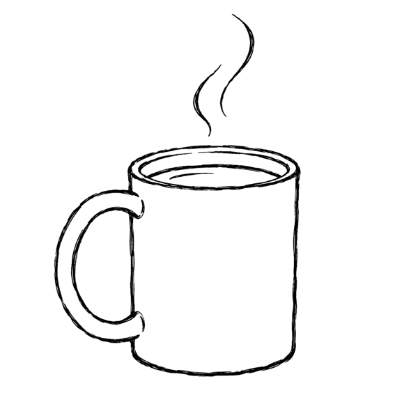
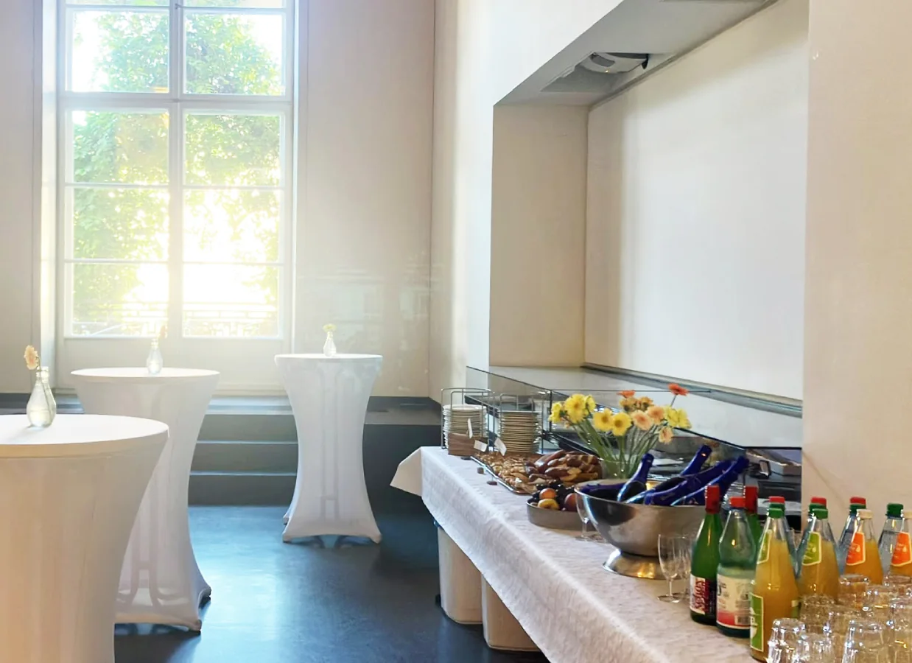
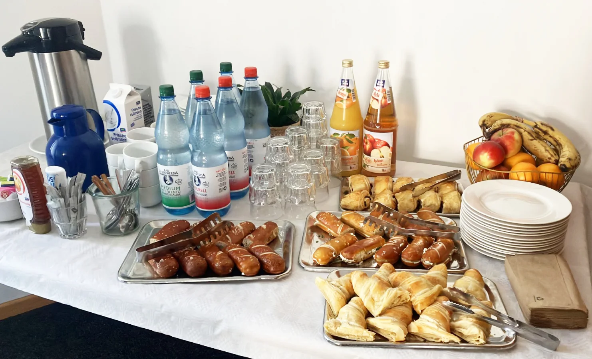
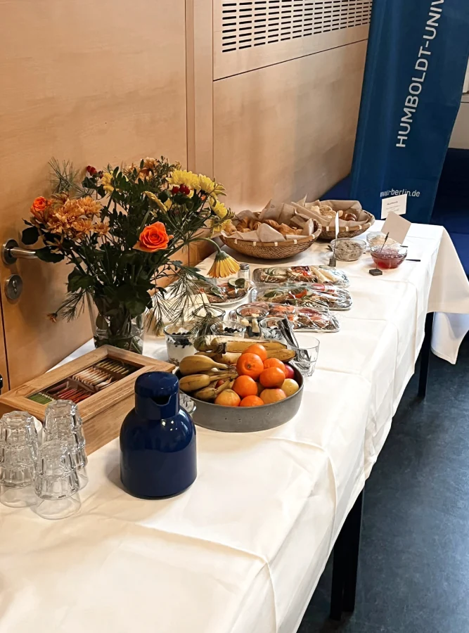
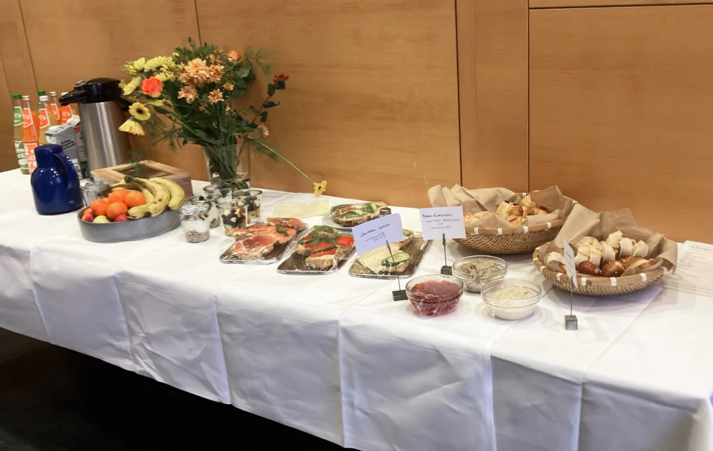
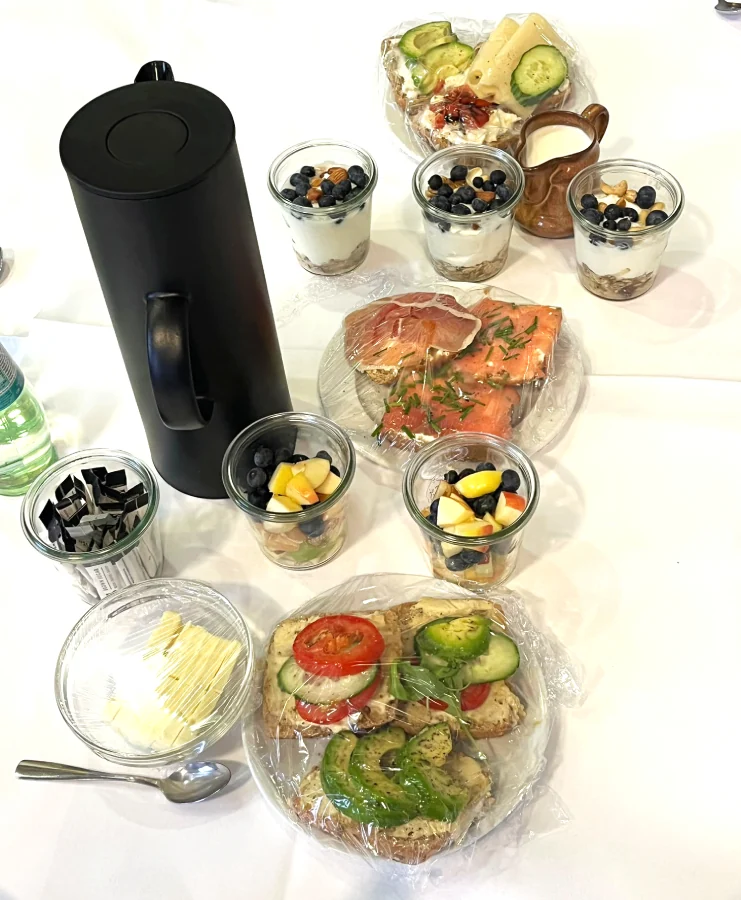
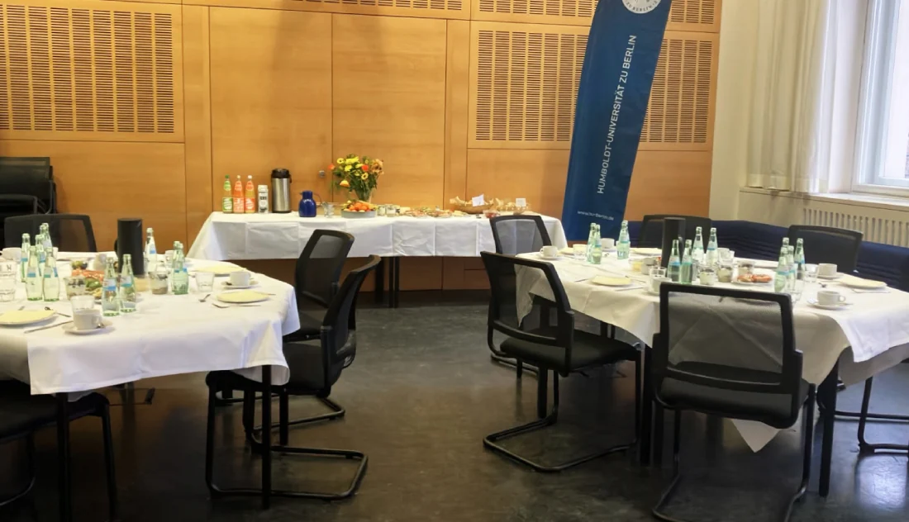
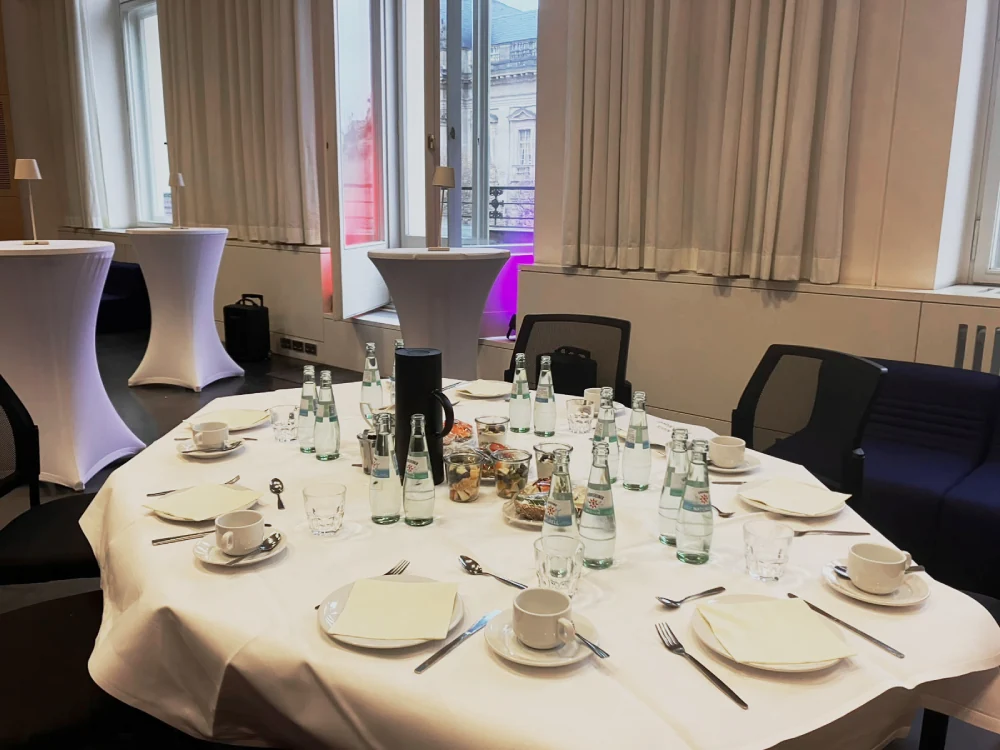
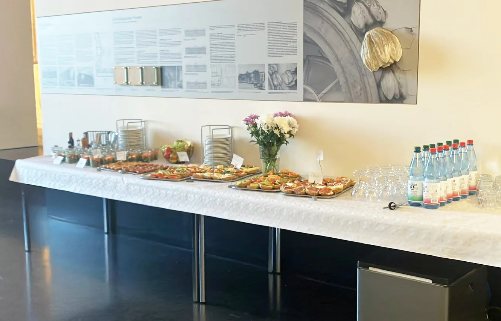

Gut gelaunt bis zum Schluss.

Tagung, Empfang oder Seminar an der Humboldt-Universität? Ob 20 oder 500 Leute – wir versorgen Sie mit Kaffee, Wasser und kleinen Snacks.
Viel guter Kaffee und kleine Leckereien – damit alle mit Freude bis zum Schluss dabei sind.
Catering anfragen







Catering anfragen
Schreiben Sie uns, wann und wo Ihre Veranstaltung stattfindet und mit wie vielen Gästen Sie ungefähr rechnen. Wir melden uns bei Ihnen.